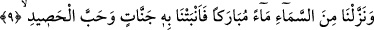
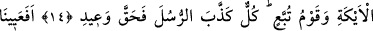
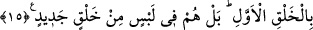

HAYATA
YENİDEN ÇIKIŞ DA
BÖYLEDİR
9. Gökten bereketli bir su indirdik, onunla bahçeler ve biçilecek daneler bitirdik.
10. Kullara rızık olması için birbirine girmiş, küme küme tomurcukları olan uzun
boylu hurma ağaçları yetiştirdik.
11. Ve o su ile ölü toprağa can verdik. İşte hayata yeniden çıkış da böyledir.
12. Onlardan önce Nuh kavmi, Res halkı ve Semûd da yalanlamıştı.
13. Âd ve Firavun ile Lût’un kardeşleri de (yalanladılar).
14. Eyke halkı ve Tübba’ kavmi de. Bütün bunlar peygamberleri yalanladılar da
tehdidim gerçekleşti!
15. İlk yaratmada âcizlik mi gösterdik? Hayır, onlar yeni bir yaratma husûsunda
şüphe içindedirler.
“Gökten bereketli bir su indirdik.” Pek çok faydaları olan, insanların, hayvanların ve
ölü yeryüzünün hayat kaynağı olan bereketli bir su indirdik. Keşfü’l-Esrâr’da âyetteki
“bereketli bir su” ifadesi ile yer altının muhtelif kısımlarında depolanıp da sene
boyunca yeryüzüne çıkıp dağılan yağmur suyunun kasdedildiği söylenmektedir.
“Onunla bahçeler ve biçilecek daneler bitirdik.” Yâni semâdan indirdiğimiz bu
bereketli su ile pek çok bahçeler, meyveli ağaçlar bitirdik. Burada da bahçeler
zikredilmiş, bahçelerdeki meyveli ağaçlar kasdedilmiştir. “Ağaçlar ve meyvelerle dolu
bahçeler…” demektir. Nitekim
“Biz o suyla (türlü türlü) ürünler çıkardık.” (Fâtır, 35/27) âyetinde de bu duruma
işâret edilmektedir.
Burada Basralı dil âlimlerine göre âyet-i kerimede mevsuf olan “zer’” ekin kelimesi
bilindiğinden dolayı hazfedilmiştir. Bu duruma misal olarak “mescid-i câmi”
denilmeyip sadece “câmi” denilir. “zer’ ve habb” kelimelerinden her biri diğerini de